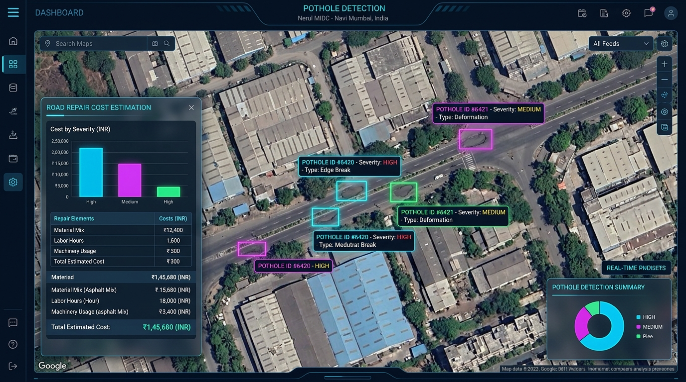

A ready-to-implement solution for MIDC industrial estates combining Vision-AI fleet scanning, automated material & cost estimation, traffic-scheduled night dispatching, and 30-minute monsoon-resistant polymer patching.

Test our Vision-AI detection engine, inspect Taloja MIDC GIS maps, and generate official MIDC maintenance work tickets:
| Cost Element | Estimate (INR) |
|---|---|
| Polymer Cold-Mix Asphalt | ₹ 17,615 |
| Technician & Labor Hours | ₹ 1,950 |
| Machinery Overhead | ₹ 3,500 |
| Total Estimated Cost | ₹ 23,065 |
Click markers to inspect potholes, view GPS coordinates, and launch automated repair diagnostics:
Our closed-loop operational workflow for zero-recurrence industrial road maintenance:
Key details from our submitted MIDC Grand Challenge application:
Industrial estates like MIDC manage over 289 complexes with 10,000+ km of roads carrying continuous 24/7 heavy container traffic (40-tonne trucks) under heavy monsoons (2,000mm+ annual rain). Current road inspection relies on slow manual reporting, leaving potholes unaddressed for weeks, causing vehicle breakdowns, freight delays, and repeated patch wash-aways.
1. Automated Spotting: Small cameras mounted on regular moving city buses and garbage trucks scan industrial roads daily, pinning every pothole on an interactive digital map.
2. Smart Estimations & Scheduling: For every pothole, the system automatically calculates repair costs, required materials, and recommends fixing it at night (11 PM - 4 AM) so heavy container trucks don't get stuck in traffic jams.
3. Fast & Permanent Repairs: Repair crews use a rapid-curing, rain-proof material that dries in just 30 minutes, ensuring heavy trucks won't break the patch even during monsoon rains.
Smartphone accelerometer apps suffer high false-positive rates and cannot estimate repair costs, while 3D laser inspection vans cost multi-crores and only run once a year. What makes PotholeMukt MIDC substantially better is its zero-extra-hardware fleet scanning, automated material/cost estimation before dispatch, traffic-density night scheduling, and 30-minute rain-proof polymer asphalt backed by 365-day digital audit maps.
Combined 20 years of domain experience across Civil Engineering & Artificial Intelligence:
Milestone roadmap for the Taloja MIDC pilot execution: